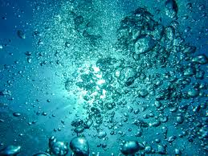
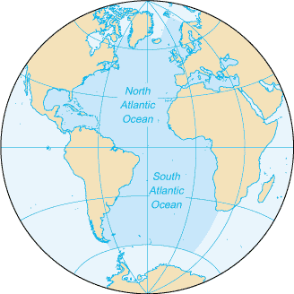
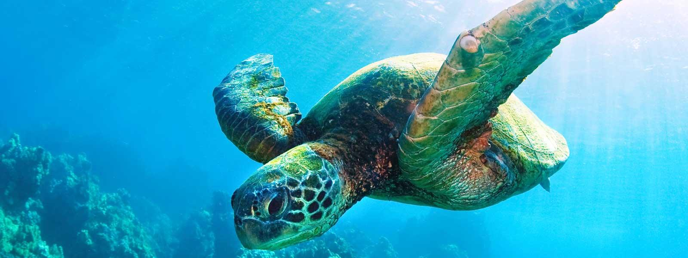
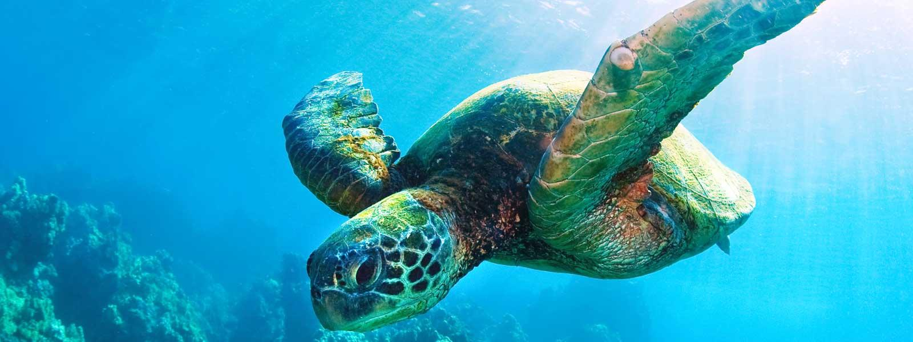
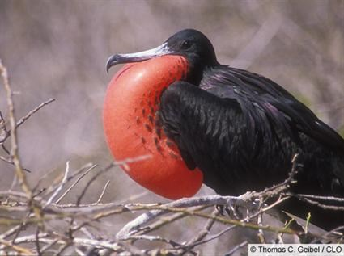
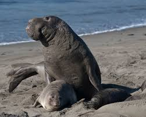

The Ocean
The Pacific Ocean
The Indian Ocean
Homepage
The Arctic Ocean
The Southern Ocean

The Atlantic Ocean

The Atlantic Ocean is the world’s 2nd largest ocean, and covers around
one fifths of the world’s total area. The ocean was first mentioned in 450 BC, and
was called the Sea of Atlas. It was also created in the Jurassic Period. It was the
first ocean to be crossed by an airplane and ship. It has the world’s greatest
fishing waters, and also has rich natural gas and oil deposits.
Animals and Landscapes
The Atlantic Ocean is home to many animals and natural landscapes, like
the second largest reef, the Cancun Reef. It also contains the Bermuda Triangle,
a triangular space with many unexplained incidents. In the South Atlantic, there
are the “Roaring Forties”, which refers to the strong winds and waves. There is
an underwater mountain range called the Atlantic Ridge, and is 10 000 miles
south of Iceland.
 

Like the other oceans, the Atlantic also has many similar animals and
many animals native to the Atlantic. There are many types of whales, sharks,
penguins, fish, sponges, crab, lobster, and squid. There is also the manatee (also
known as the sea cow). There are many types of sea turtles, which are quickly
becoming extinct. It is also home to the elephant seal, the largest seal on earth.
The fur seal and the frigate bird are 2 more interesting animals that call the
Atlantic Ocean their home.


Fun Facts
Did you know that the Atlantic Ocean was the first ocean to be fully
crossed by a plane? It was also where Amelia Earhart flyed solo over the ocean
in 1928, making her the first woman to do so. The Atlantic Ocean was also the
place where the Titanic hit an iceberg and sunk in 1928. The Ocean is also 6.5x
the size of the US! The biggest island in the world, Greenland, is also located in
this ocean.